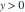
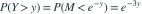

三个独立  变量的最大值为 M，令 。Y 服从哪种分布？
变量的最大值为 M，令 。Y 服从哪种分布？
变量的最大值为 M，令 。Y 服从哪种分布？- A形状为 3、速率为 1 的 Gamma 分布
- B速率为 1/3 的指数分布
- C速率为 3 的指数分布
- D速率为 1 的指数分布
我已思考，展开答案与解析
正确答案：C
- （）。对

，
。 - 这是速率 3 的指数分布生存函数。
易错提醒负对数是递减变换，分布函数与生存函数方向需要翻转。
JYSG · 432精选 · 册内中国科学技术大学432·2025年·12(3)；PDF第82页（印刷页80）
原大题拆解